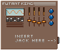
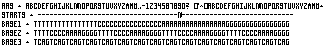

Excerpts from the Library of the Futant King
When I first heard of the Futant King, I was very busy with another thing, so I never learned more about the Futant King than the short story of his sporemind computer and I Ching. It appears that it was some kind of technofetischistic literature review, but eventually I got around to reading it and now I'm showing it to you:
So after a day of hard work at the Sporefactory I sat down in the gentle slope down by the old castle ruins and took out my little portable computer. It's Sporemind DVCSD-45, damn, it's power cell life is supposed to be 5 years, but after half a year of daily use it's barely 25% power left. And there's no replacement in these suckers, just plain composable, I gotta try that funghster hack and see if I can replace the battery cell without having the machine start decomposing on me. Well, anyway, so I booted Futant King. What I really like about this software is that =213 / +21df3 f++1203 31asdfsd20´39123 019239fadf+ +-23- 376g ..AAGGADDAACCCACACACGCGCG
HHCGAGCGACGAGCHAGCGAH(vilka bokstäver?). the rest of the message is garbled like that, except for a quriously large signature file.
At other times I have spotted references to futant king and his kin, I have a special place in my camera memory where I store the images I take of these references.
----
FUTANT KING is a line of telemerchandise from Fractal Fear Inc.
----
Futant King is a very stylish remote control.
----
what is Futant King?
----
is it OK to be FUTANT KING?
----
when can we expect the release of the new version of FUTANT KING?
----
how can I be a Futant King?

how do I play a game of Futant King?
----
is the design of Futant King inspired by the German Bauhaus style?
////the Futant King is just a leftover from the 20th century
////
F* King is a No-No for you young boy
////
I wouldn't touch Futant King with a 10-foot pole
////
I dislike Futant King
////What's so great about Futant King - Nothing!
000000000000000
From the Le Monde Diplomatique: ...the futant king line of clothing is currently under manufacture in a seedy sweatshop in northern taiwan. Due to current international outrage the extremely hip clothes are carefully smuggled into alaska by expert teenage aleut girls in coal fiber kayaks across the barents sea. the shipments are later transferred by remote controlled weather balloons into heartland usa.
... Futant King
operate, ch, col, input select, audio out, set, clear, pause/still
Futant King
schroombase/fractal encodings/sporespace/
---
... the boy was shaking with convulsions, screaming "I am the Futant King!!! I can do anything!!!"
---
no one knows where the pseudo-organic Futant King devices originated ... some have been manufactured on a licence from an unknown inventor but most are dangerous pirate versions ...
---
Futant King Aftershave is not only gentle but it actually genetically modifies your facial skin - Futant King: The GM Lotion ...
---
The name of the Futant King had never been heard before but as soon as it was uttered it triggered something in all who heard it - children seemed to recognize the name instinctively, like from a half-remembered collective dream ...
---
Futant King 2 was a major flop that almost drove the production company out of business ... only with FK3 did they manage to restore the charm of the original ...
encoding information in real life systems.

Data-mining the user: In the interest of advancing the science of handling complex information, PA will now take a great leap forward and start to data-mine its user base, and later, all Net surfers. No effort will be spared in characterizing patterns of behavior, preferences and fears. The goal is to get a huge database describing the intricate connections between the unsafe mental states of the world's surfers. The database will in time become so huge and interconnected that it is almost impossible to use; it will overwhelm the operator with myriads of tidbits, fact and fancy. PA looks forward to acquiring this little micro-cosmos, where all redundant information will have been compressed away: everything will be reduced to its essentials. This approach falls in with PA:s wishes: to become detached from the world of the living, to mechanize our living space and merge together with cities, communications, and flows of information.
/from the Library-Archive of the Futant King.